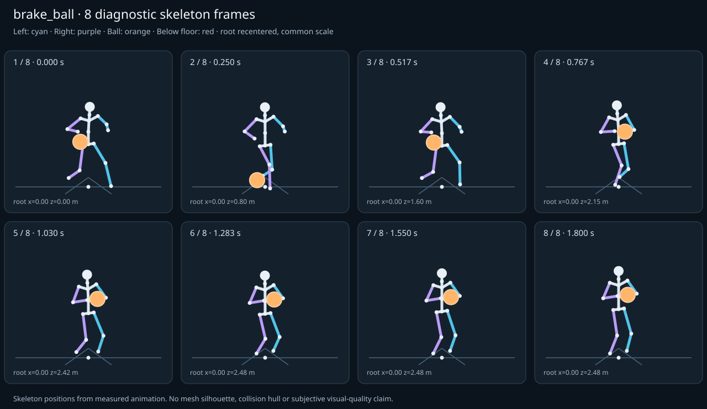

מה הוריד את הציון
- מגע בכדור: חסרים נתוני מדידה (Some declared contacts could not be sampled; partial observations cannot certify the full clip.)
- קפיצות פוזה: RightFoot בזמן 0.1667 ש׳; קפיצת סיבוב שקולה 21.9523 מעלות ב־60Hz (אדום)
- כניסה ויציאה מול המתנה: פער ב־כניסה מול המתנה; יחס חריגה 2.5471 (צהוב)
כיסוי: 86%. לא כל מדד חל על כל קליפ; הסטטוס והראיות מפורטים למטה.
שמונה פריימים
תצוגת שלד אבחונית שנבנתה מהפריימים הנמדדים. צד שמאל בכחול, ימין בסגול, כדור בכתום. מיקום השורש ממורכז לצפייה; מיקומו בעולם כתוב בכל פריים.

המדדים והראיות
| מדד | מצב | ערך | ציון | סף ופרטי מדידה |
|---|---|---|---|---|
| החלקת רגליים | ירוק | 0.001 height ratio | 97 | {
"definition": {
"label": "החלקת רגליים",
"unit": "height ratio",
"green": 0.01,
"yellow": 0.035,
"weight": 18,
"description": "Maximum horizontal sole displacement from the first sample of each declared support window, divided by character height. Inferred support is used only when no windows were supplied."
},
"value": 0.001403,
"status": "green",
"score": 97.19,
"evidence": {
"coordinateSpace": "authored reference world (simulation-owned)",
"supportSource": "declared",
"windows": 7,
"samples": 174,
"maxDriftMeters": 0.00237,
"p95SpeedMetersPerSecond": 0.078495,
"worst": {
"bone": "LeftFoot",
"t": 0.28,
"start": 0,
"end": 0.28,
"driftMeters": 0.00237
}
}
} |
| חדירה לרצפה | ירוק | 0 height ratio | 100 | {
"definition": {
"label": "חדירה לרצפה",
"unit": "height ratio",
"green": 0.005,
"yellow": 0.02,
"weight": 15,
"description": "Maximum depth of the supplied sole probe points and all skeletal joint centers below the declared floor plane, divided by height. Sole probes are not a mesh collision audit."
},
"value": 0,
"status": "green",
"score": 100,
"evidence": {
"samples": 2440,
"floorY": 0,
"probeKind": "declared sole probes plus skeletal joint centers (no mesh surfaces)",
"maxDepthMeters": 0,
"worst": {
"t": 0,
"bone": "LeftFoot",
"depthMeters": 0,
"y": 0.007
}
}
} |
| קפיצות פוזה | אדום | 2.526 discontinuity ratio | 50 | {
"definition": {
"label": "קפיצות פוזה",
"unit": "discontinuity ratio",
"green": 1,
"yellow": 2.5,
"weight": 18,
"description": "Maximum adjacent 60 Hz-equivalent step: root-relative marker displacement / 0.04 height, root-relative rotation / 15 degrees, or root translation / 0.08 height. A fast continuous action can also exceed this screening threshold."
},
"value": 2.525787,
"status": "red",
"score": 49.74,
"evidence": {
"adjacentPairs": 121,
"observations": 2057,
"maxDegrees60Hz": 21.952301,
"maxMarkerStepHeight60Hz": 0.101031,
"maxRootStepHeight60Hz": 0.031558,
"worst": {
"ratio": 2.525787180317461,
"t": 0.166667,
"previousTime": 0.15,
"bone": "RightFoot",
"markerStepHeight60Hz": 0.101031,
"degrees60Hz": 1.598548
}
}
} |
| חריגות אנטומיות | ירוק | 0 % affected frames | 100 | {
"definition": {
"label": "חריגות אנטומיות",
"unit": "% affected frames",
"green": 0.5,
"yellow": 3,
"weight": 14,
"description": "Percentage of frames with elbow or knee flexion above 165 degrees, neck bend above 80 degrees, or a segment length changing by more than 5%. Optional calibrated hinge checks detect reverse knee flexion above 8 degrees. Conservative marker limits do not diagnose axial joint twist."
},
"value": 0,
"status": "green",
"score": 100,
"evidence": {
"testedFrames": 122,
"affectedFrames": 0,
"checks": 2074,
"maxLimbFlexionDegrees": 119.760394,
"maxRelativeSegmentLengthChange": 0,
"hingeDirectionChecked": true,
"axialTwistChecked": false,
"violations": []
}
} |
| מגע בכדור | אין די נתונים | — height ratio | — | {
"definition": {
"label": "מגע בכדור",
"unit": "height ratio",
"green": 0.015,
"yellow": 0.05,
"weight": 13,
"description": "Maximum absolute distance from the ball surface to the sampled, bone-transformed declared contact point, divided by height. Events are evaluated at their exact declared times by interpolation."
},
"value": null,
"status": "insufficient-data",
"score": null,
"reason": "Some declared contacts could not be sampled; partial observations cannot certify the full clip.",
"evidence": {
"radiusMeters": 0.12,
"samples": 164,
"missed": [
{
"bone": "RightHand",
"t": 1.8,
"reason": "outside sampled interval"
},
{
"bone": "LeftHand",
"t": 1.8,
"reason": "outside sampled interval"
}
],
"contacts": [
{
"t": 0.0756,
"bone": "RightHand",
"gapMeters": 0.00926,
"signedGapMeters": 0.00926,
"centerDistanceMeters": 0.12926,
"contactPoint": [
-0.300152,
0.848191,
0.50235
],
"ballCenter": [
-0.3,
0.718932,
0.50192
],
"declaredLocalPoint": true
},
{
"t": 0.4644,
"bone": "RightHand",
"gapMeters": 0.003468,
"signedGapMeters": 0.003468,
"centerDistanceMeters": 0.123468,
"contactPoint": [
-0.300008,
0.843123,
1.715681
],
"ballCenter": [
-0.3,
0.719655,
1.715612
],
"declaredLocalPoint": true
},
{
"t": 0.716667,
"bone": "RightHand",
"gapMeters": 0.002463,
"signedGapMeters": -0.002463,
"centerDistanceMeters": 0.117537,
"contactPoint": [
-0.21959,
0.971066,
2.32834
],
"ballCenter": [
-0.125208,
0.901847,
2.339091
],
"declaredLocalPoint": true
},
{
"t": 0.683333,
"bone": "RightHand",
"gapMeters": 0.002441,
"signedGapMeters": -0.002441,
"centerDistanceMeters": 0.117559,
"contactPoint": [
-0.245824,
0.968773,
2.260999
],
"ballCenter": [
-0.181448,
0.870695,
2.268516
],
"declaredLocalPoint": true
},
{
"t": 0.75,
"bone": "RightHand",
"gapMeters": 0.001131,
"signedGapMeters": -0.001131,
"centerDistanceMeters": 0.118869,
"contactPoint": [
-0.185164,
0.969755,
2.391339
],
"ballCenter": [
-0.073015,
0.932464,
2.404068
],
"declaredLocalPoint": true
},
{
"t": 0.65,
"bone": "RightHand",
"gapMeters": 0.001047,
"signedGapMeters": -0.001047,
"centerDistanceMeters": 0.118953,
"contactPoint": [
-0.266445,
0.957632,
2.189513
],
"ballCenter": [
-0.232564,
0.843673,
2.193392
],
"declaredLocalPoint": true
},
{
"t": 0.756,
"bone": "RightHand",
"gapMeters": 0.000991,
"signedGapMeters": -0.000991,
"centerDistanceMeters": 0.119009,
"contactPoint": [
-0.178245,
0.969844,
2.402186
],
"ballCenter": [
-0.064401,
0.937702,
2.415214
],
"declaredLocalPoint": true
},
{
"t": 0.756,
"bone": "LeftHand",
"gapMeters": 0.000694,
"signedGapMeters": 0.000694,
"centerDistanceMeters": 0.120694,
"contactPoint": [
0.055566,
0.936943,
2.402009
],
"ballCenter": [
-0.064401,
0.937702,
2.415214
],
"declaredLocalPoint": true
},
{
"t": 0.783333,
"bone": "RightHand",
"gapMeters": 0.000302,
"signedGapMeters": -0.000302,
"centerDistanceMeters": 0.119698,
"contactPoint": [
-0.150915,
0.972818,
2.448814
],
"ballCenter": [
-0.03295,
0.957904,
2.46257
],
"declaredLocalPoint": true
},
{
"t": 0.78,
"bone": "RightHand",
"gapMeters": 0.00029,
"signedGapMeters": -0.00029,
"centerDistanceMeters": 0.11971,
"contactPoint": [
-0.153945,
0.972224,
2.443314
],
"ballCenter": [
-0.036177,
0.955726,
2.457062
],
"declaredLocalPoint": true
},
{
"t": 0.616667,
"bone": "RightHand",
"gapMeters": 0.000256,
"signedGapMeters": -0.000256,
"centerDistanceMeters": 0.119744,
"contactPoint": [
-0.283973,
0.943262,
2.113233
],
"ballCenter": [
-0.270776,
0.824256,
2.11468
],
"declaredLocalPoint": true
},
{
"t": 0.483333,
"bone": "RightHand",
"gapMeters": 0.000215,
"signedGapMeters": 0.000215,
"centerDistanceMeters": 0.120215,
"contactPoint": [
-0.300291,
0.875764,
1.770628
],
"ballCenter": [
-0.3,
0.755562,
1.76883
],
"declaredLocalPoint": true
},
{
"t": 0.783333,
"bone": "LeftHand",
"gapMeters": 0.000193,
"signedGapMeters": 0.000193,
"centerDistanceMeters": 0.120193,
"contactPoint": [
0.08646,
0.957718,
2.448869
],
"ballCenter": [
-0.03295,
0.957904,
2.46257
],
"declaredLocalPoint": true
},
{
"t": 0.78,
"bone": "LeftHand",
"gapMeters": 0.000183,
"signedGapMeters": 0.000183,
"centerDistanceMeters": 0.120183,
"contactPoint": [
0.083219,
0.955546,
2.443338
],
"ballCenter": [
-0.036177,
0.955726,
2.457062
],
"declaredLocalPoint": true
},
{
"t": 0.816667,
"bone": "RightHand",
"gapMeters": 0.00004,
"signedGapMeters": -0.00004,
"centerDistanceMeters": 0.11996,
"contactPoint": [
-0.128556,
0.978969,
2.499933
],
"ballCenter": [
-0.009504,
0.975031,
2.514133
],
"declaredLocalPoint": true
},
{
"t": 0.816667,
"bone": "LeftHand",
"gapMeters": 0.000039,
"signedGapMeters": 0.000039,
"centerDistanceMeters": 0.120039,
"contactPoint": [
0.109695,
0.974994,
2.499958
],
"ballCenter": [
-0.009504,
0.975031,
2.514133
],
"declaredLocalPoint": true
},
{
"t": 0.583333,
"bone": "RightHand",
"gapMeters": 0.000038,
"signedGapMeters": -0.000038,
"centerDistanceMeters": 0.119962,
"contactPoint": [
-0.295448,
0.93365,
2.03264
],
"ballCenter": [
-0.292188,
0.813732,
2.033007
],
"declaredLocalPoint": true
},
{
"t": 0.516667,
"bone": "RightHand",
"gapMeters": 0.000037,
"signedGapMeters": 0.000037,
"centerDistanceMeters": 0.120037,
"contactPoint": [
-0.300039,
0.918106,
1.860648
],
"ballCenter": [
-0.3,
0.798069,
1.860416
],
"declaredLocalPoint": true
},
{
"t": 0.05,
"bone": "RightHand",
"gapMeters": 0.000036,
"signedGapMeters": 0.000036,
"centerDistanceMeters": 0.120036,
"contactPoint": [
-0.300379,
0.886764,
0.421597
],
"ballCenter": [
-0.3,
0.766739,
0.42
],
"declaredLocalPoint": true
},
{
"t": 0.53,
"bone": "RightHand",
"gapMeters": 0.000015,
"signedGapMeters": 0.000015,
"centerDistanceMeters": 0.120015,
"contactPoint": [
-0.300014,
0.927486,
1.896438
],
"ballCenter": [
-0.3,
0.807471,
1.896355
],
"declaredLocalPoint": true
}
],
"contactDetailsTruncated": true,
"coordinateSpace": "authored reference world (simulation-owned)",
"observedValue": 0.005479,
"observedStatus": "green",
"observationCoverage": 0.9879518072289156
},
"partial": true
} |
| כניסה ויציאה מול המתנה | צהוב | 2.547 continuity ratio | 57 | {
"definition": {
"label": "כניסה ויציאה מול המתנה",
"unit": "continuity ratio",
"green": 1,
"yellow": 3,
"weight": 10,
"description": "Worst entry/exit mismatch to the best matching idle phase: RMS marker error / 0.04 height, RMS bone rotation / 25 degrees, or RMS endpoint velocity error / 0.75 height per second. Horizontal root translation is aligned; root height and body pose remain measurable."
},
"value": 2.547116,
"status": "yellow",
"score": 56.79,
"evidence": {
"entry": {
"ratio": 2.5471160139130693,
"t": 0,
"idleTime": 2.366667,
"markers": 17,
"rmsPositionHeight": 0.101885,
"rmsRotationDegrees": 36.72466,
"rmsVelocityHeightPerSecond": 0.874725,
"velocityEvaluated": true
},
"exit": {
"ratio": 2.0769106622361257,
"t": 1.8,
"idleTime": 2.016667,
"markers": 17,
"rmsPositionHeight": 0.057822,
"rmsRotationDegrees": 51.922767,
"rmsVelocityHeightPerSecond": 0.006127,
"velocityEvaluated": true
},
"worstEndpoint": "entry",
"alignment": "horizontal root translation; raw asset poses used when provided"
}
} |
| מהירות גוף מול צעדים | לא חל | — relative speed error | — | {
"definition": {
"label": "מהירות גוף מול צעדים",
"unit": "relative speed error",
"green": 0.2,
"yellow": 0.5,
"weight": 8,
"description": "Relative difference between average root travel speed and the median backward support-foot sweep speed relative to the root. Cadence and implied stride lengths are also reported. In-place clips need an explicit reference travel scenario; stationary actions are not scored as locomotion."
},
"value": null,
"status": "not-applicable",
"score": null,
"reason": "This action is not declared locomotion.",
"evidence": {}
} |
| סימטריה | ירוק | 0 relative mismatch | 100 | {
"definition": {
"label": "סימטריה",
"unit": "relative mismatch",
"green": 0.03,
"yellow": 0.1,
"weight": 4,
"description": "Maximum bilateral segment-length mismatch. Looping locomotion additionally compares reflected half-cycle leg markers; explicit pose symmetry compares simultaneous bilateral markers. One-sided actions retain unscored motion diagnostics, so a valid kick or dribble arm is not penalized for intentional asymmetry."
},
"value": 0,
"status": "green",
"score": 100,
"evidence": {
"mode": "structural",
"modeSource": "structural default for intentional asymmetry",
"structuralMismatch": 0,
"segments": [
{
"segment": "Arm-ForeArm",
"mismatch": 0
},
{
"segment": "ForeArm-Hand",
"mismatch": 0
},
{
"segment": "UpLeg-Leg",
"mismatch": 0
},
{
"segment": "Leg-Foot",
"mismatch": 0
}
],
"motionRmsHeight": null,
"worstMotion": null,
"bilateralPoseRmsHeightUnscored": 0.117336,
"note": "One-sided authored actions are checked for structural symmetry only."
}
} |